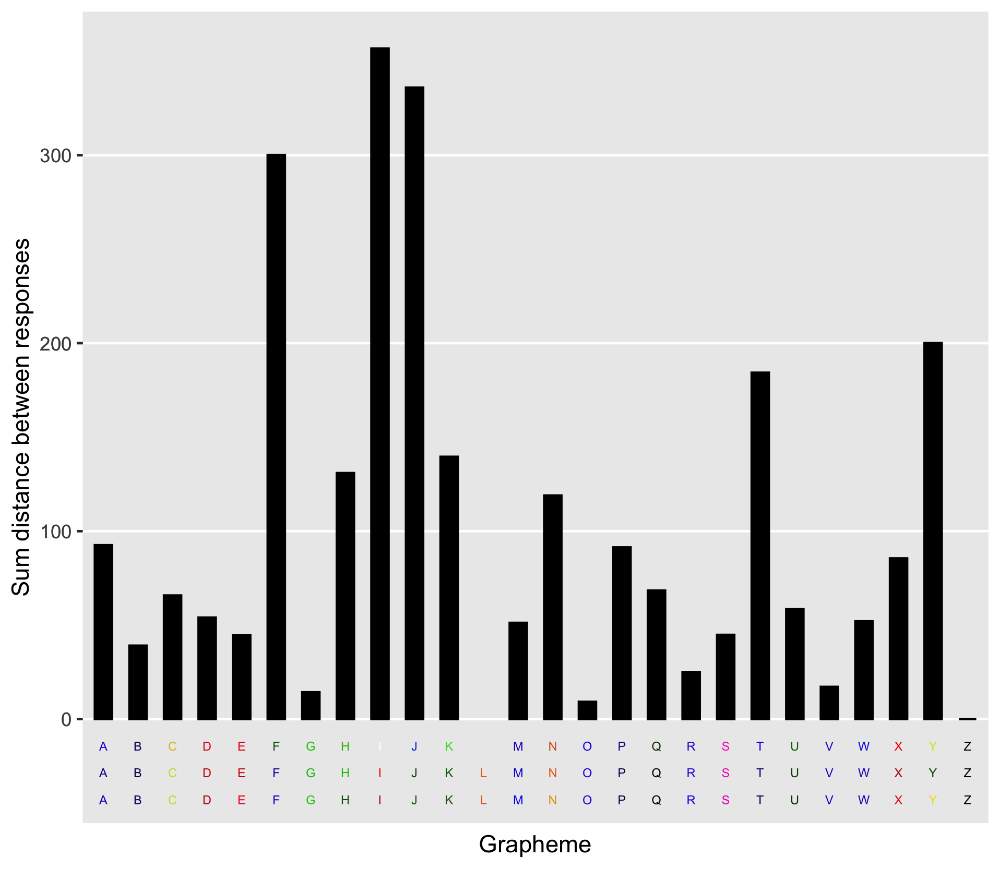

This is an R package for working with data resulting from grapheme-color synesthesia-related consistency tests. synr provides tools for exploring test data, including visualizing single participant’s data, and applying summarizing functions such as calculating color variation/consistency scores or classifying participant data as valid or invalid.
Installation
TODO: This section will be updated once it’s been decided where to make synr binaries available.
Usage
Once data are in an appropriately formatted data frame/tibble (‘long format’ - see vignettes for more information), everything starts with rolling up participant data into a ‘ParticipantGroup’ object with create_participantgroup_widedata:
library(synr)
pgroup <- create_participantgroup(
formatted_df, # data frame/tibble to use, with data in 'long format'
n_trials_per_grapheme=3, # number of trials that grapheme was used for
participant_col_name="participant_id", # name of column which holds participant ID's
symbol_col_name='symbol', # name of column which holds grapheme symbol strings
color_col_name='color', # rname of column which holds response color HEX codes
color_space_spec = "Luv" # color space to use for all calculations with participant group
)Using the resulting object (pgroup), you can call various methods. A couple of examples follow.
Example group-level method: get_mean_consistency_scores
pgroup$get_mean_consistency_scores(symbol_filter=LETTERS) would return a vector of CIELUV-based consistency scores, using only data from trials involving capital letters.
Example participant-level method: get_plot
pgroup$participants[[1]]$get_plot(symbol_filter=LETTERS) would produce a bar plot of per-grapheme consistency scores for a single participant, using only data from trials involving capital letters. You can see an example below.

Detailed usage information
More details on required data format and how to use synr itself can be found in the package’s vignettes, which are also included in the package itself (run help(synr) to find them).